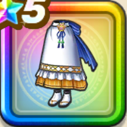

セラフィの割烹着下
攻略班 9.0点 / 魅了耐性+5%幻惑耐性+10%魅了耐性+5%幻惑耐性+10%スキルの体技ダメージ+8%けもの系へのダメージ+5%【晴れ】けもの系へのダメージ+5%
くわしい特徴
【レベル別習得スキル】 Lv1魅了耐性+5% Lv8幻惑耐性+10% Lv10スキルの体技ダメージ+8% Lv12けもの系へのダメージ+5% Lv12眠り成功率+5% Lv15【晴れ】けもの系へのダメージ+5% Lv18魅了耐性+5% Lv20すばやさ+6 Lv23幻惑耐性+10% Lv25守備力+5 【限界突破スキル】 1凸攻撃力+12 2凸すばやさ+12 3凸守備力+12 4凸さいだいHP+12